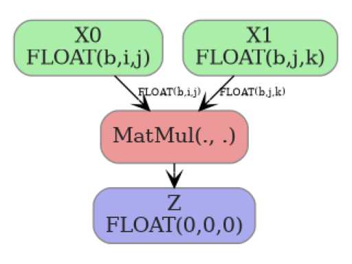

yobx.helpers.einsum_helper#
modules
Public API#
Utilities to decompose an einsum equation into basic ONNX operators.
The decomposition replaces a single Einsum node with a sequence of
Transpose, Reshape, MatMul, Mul, ReduceSum,
Unsqueeze, Squeeze and Identity nodes that are equivalent
for any input shapes. The resulting sub-graph is embedded in a
stand-alone onnx.ModelProto so it can be inspected, optimised,
or stitched into a larger graph.
- yobx.helpers.einsum_helper.decompose_einsum(equation: str, *input_shapes: ~typing.Tuple[int | str | None, ...], dtype: ~numpy.dtype | type = <class 'numpy.float32'>, opset: int | None = None, strategy: str = 'numpy', clean: bool = True, verbose: bool = False, patterns: str | None = None) ModelProto[source]#
Decomposes an einsum equation into a sequence of standard ONNX operators.
Replaces the single
Einsumnode with primitive operations—Transpose,Reshape,MatMul,Mul,ReduceSum,Unsqueeze,Squeeze,Gemm, andIdentity—that are equivalent for any input shapes. The result is returned as a stand-aloneonnx.ModelProto.- Parameters:
equation – einsum equation string (e.g.
"ij,jk->ik"). The equation must contain an explicit output (->).input_shapes – optional shapes for each input operand. Each element of the tuple may be an integer (concrete size), a string (symbolic dimension name, e.g.
"batch"), orNone(unknown dimension). When omitted, shapes with all dimensions equal to2are used internally and the produced ONNX model will have fully dynamic input shapes. When provided, the shapes are reflected in thevalue_infoof the returned model—concrete integers become fixed-size dimensions, strings become named symbolic dimensions, andNonevalues remain dynamic.dtype – numpy scalar type used for the model inputs and output, defaults to
numpy.float32. Supported values arenumpy.float32,numpy.float64,numpy.int32, andnumpy.int64.opset – ONNX opset version for the produced model; defaults to the current ONNX opset version (capped at 18).
strategy – decomposition strategy. Use
"numpy"(default) for a fully element-wise decomposition that avoids any remainingEinsumcall."simple"is supported for numpy evaluation but cannot be converted to ONNX.clean – when
True(default), removes unused intermediate nodes from the decomposed graph.verbose – print intermediate decomposition steps.
patterns – to select a particular set of optimization patterns to apply
- Returns:
onnx.ModelProtowhose graph computes the same result asnumpy.einsum(equation, *inputs).
Example: matrix multiplication:
import numpy as np import onnxruntime from yobx.helpers.einsum_helper import decompose_einsum model = decompose_einsum("ij,jk->ik", (3, 4), (4, 5)) sess = onnxruntime.InferenceSession( model.SerializeToString(), providers=["CPUExecutionProvider"] ) a = np.random.rand(3, 4).astype(np.float32) b = np.random.rand(4, 5).astype(np.float32) (result,) = sess.run(None, {"X0": a, "X1": b}) expected = np.einsum("ij,jk->ik", a, b) assert np.allclose(result, expected, atol=1e-5)
Note
Equations with repeated indices in a single operand (diagonal operations, e.g.
"ii->i") are not supported and will raiseNotImplementedError.(
Source code,png,hires.png,pdf)
{kind=link}
{kind=link}
- yobx.helpers.einsum_helper.decompose_einsum_2inputs(equation: str, shape0: Sequence[int | str | None] | None = None, shape1: Sequence[int | str | None] | None = None, dtype: dtype | type = <class 'numpy.float32'>, opset: int | None = None) ModelProto[source]#
Decomposes a 2-input einsum equation directly into basic ONNX operators.
This is a completely independent implementation — it does not use the
EinsumSubOp/GraphEinsumSubOpframework. It analyses the equation, classifies every index letter into one of four roles (batch, contract, left, right), and emits a fixed sequence ofTranspose,Reshape,MatMul,Reshape,Transposenodes that compute the result for any input shape.- Parameters:
equation – einsum equation string with exactly two inputs and an explicit output, e.g.
"ij,jk->ik"or"bij,bjk->bik".shape0 – optional shape of the first input. Each element may be an integer (rank hint — the ONNX graph input is made fully dynamic), a string (symbolic name, e.g.
"batch"), orNone(dynamic dimension). Use string dims when you need symbolic FLOPs estimation.shape1 – optional shape of the second input (same convention).
dtype – numpy scalar type for the model inputs and output (default
numpy.float32).opset – ONNX opset version; defaults to the current ONNX opset capped at 18.
- Returns:
onnx.ModelProtothat computesnumpy.einsum(equation, X0, X1).- Raises:
ValueError – if equation does not have exactly two inputs.
Example:
import numpy as np import onnxruntime from yobx.helpers.einsum_helper import decompose_einsum_2inputs model = decompose_einsum_2inputs("bij,bjk->bik", (2, 3, 4), (2, 4, 5)) sess = onnxruntime.InferenceSession( model.SerializeToString(), providers=["CPUExecutionProvider"] ) a = np.random.rand(2, 3, 4).astype(np.float32) b = np.random.rand(2, 4, 5).astype(np.float32) (result,) = sess.run(None, {"X0": a, "X1": b}) assert np.allclose(result, np.einsum("bij,bjk->bik", a, b), atol=1e-5)
- yobx.helpers.einsum_helper.list_decomposed_nodes(equation: str, *input_shapes: Tuple[int | str | None, ...], verbose: bool = False) List[str][source]#
Returns the list of ONNX operator types that result from decomposing equation.
This is a convenience wrapper around
decompose_einsum()that runs the decomposition and extracts theop_typeattribute from every node in the produced graph.- Parameters:
equation – einsum equation string.
input_shapes – optional shapes for each input operand.
verbose – print intermediate decomposition steps.
- Returns:
list of operator type strings (e.g.
["Transpose", "MatMul", "ReduceSum", ...]).
<<<
from yobx.helpers.einsum_helper import list_decomposed_nodes ops = list_decomposed_nodes("ij,jk->ik") print(ops)
>>>
['Gemm']
Internal sub-package#
Internal einsum decomposition utilities.
Public entry points (used by yobx.helpers.einsum_helper.decompose_einsum()):
decompose_einsum_equation()— decomposes an equation into aGraphEinsumSubOpgraph.GraphEinsumSubOp— a graph ofEinsumSubOpnodes that can evaluate itself or be converted to anonnx.ModelProto.EinsumSubOp— a single node in the decomposition graph.decompose_einsum_2inputs()— a completely independent algorithm that builds an ONNX graph directly from a 2-operand einsum equation.EinsumBuilder— the stateful ONNX node/initializer accumulator used bydecompose_einsum_2inputs().
- class yobx.helpers._einsum.EinsumBuilder(opset: int)[source]#
Stateful helper that accumulates ONNX nodes and initializers while generating unique names.
- add_init(tensor: TensorProto) str[source]#
Registers tensor as an initializer and returns its name.
- concat_shapes(parts: List[str], prefix: str = 'cat') str[source]#
Concatenates a list of 1-D shape tensors along axis 0.
- const_1d(values: List[int], prefix: str = 'c') str[source]#
Emits a 1-D int64 constant and returns its name.
- dim_product(shape_name: str, indices: List[int], prefix: str) str[source]#
Computes the product of shape dimensions at indices as a 1-D tensor of length 1. Returns constant
[1]when indices is empty.
- gather_dims(shape_name: str, indices: List[int], prefix: str) str[source]#
Gathers specific dimension values from a shape vector.
Returns a 1-D int64 tensor of length
len(indices)holding the gathered dimension values, or a constant[1]when indices is empty.
- identity(inp: str, prefix: str = 'id') str[source]#
Emits an Identity node (used as a no-op rename).
- static make_value_info(name: str, elem_type: int, shape: Sequence[int | str | None] | None) ValueInfoProto[source]#
Builds an ONNX
ValueInfoProtofor a tensor input.- Parameters:
name – tensor name.
elem_type – ONNX element type (e.g.
onnx.TensorProto.FLOAT).shape – optional list of dimension sizes. Each element may be an integer (fixed size), a string (symbolic name), or
None(dynamic). PassNonefor a fully unranked input.
- Returns:
- class yobx.helpers._einsum.EinsumSubOp(full_dim: int, name: str, *inputs: int | EinsumSubOp, **kwargs: Any)[source]#
Defines a sub operation used in Einsum decomposition.
- Parameters:
full_dim – dimension of the result
name – name (reshape, transpose, reduce_sum, matmul, id, squeeze, diagonal, mul, batch_dot)
inputs – inputs
kwargs – arguments
Operator suffixed by _mm (transpose_mm, reduce_sum_mm) are equivalent to the same operator without the suffix but takes two inputs and only changes the first one.
Attributes _info summarizes the known information about dimensions. Many of them are empty because inserted. Value 1 means it was the case, 2 means it is a plain dimension.
- apply(data: Dict[int, Any], verbose: bool = False, **kwargs: Any) Any[source]#
Applies one operator on the data.
- Parameters:
data – dictionary storing the results
verbose – prints out intermediate results
kwargs – additional parameters, see methods _apply*
- Returns:
output
Known additional parameters:
‘matmul_impl’: if None calls
numpy.einsum()throughnumpy_extended_dot(wrong) (default) or ‘py’ to callnumpy_extended_dot_pythoninstead.
- compute_output_row(row: ndarray, row2: ndarray | None = None, ab: bool = False, verbose: bool = False)[source]#
Updates row based on the operator.
- get_dot_kind() str[source]#
Every matrix multiplication can be either:
a simple multiplication (M) (undetected)
a 2D matrix multiplication (11)
a broadcasted matrix multiplication (N1 or 1N)
a batch matrix multiplication (NN)
This method returns which kind it is.
- to_onnx(names: Dict[int, str], opset: int | None, verbose: bool = False, **kwargs: Any) Iterable[NodeProto | TensorProto][source]#
Converts this node into ONNX. Enumerates all ONNX node which participate to the conversion. The last one is the final output.
- Parameters:
names – dictionary where to find already converted name
opset – opset
verbose – prints out intermediate results
kwargs – additional parameter for the conversion
- Returns:
output
- class yobx.helpers._einsum.GraphEinsumSubOp(letters: str, mat: ndarray, lengths: List[int], duplicates: List[Dict[str, Any] | None])[source]#
Class gathering all nodes produced to explicit einsum operators.
- Parameters:
letters – list of distinct letters
mat – matrix, see
analyse_einsum_equationlengths – lengths of every input
duplicates – see
analyse_einsum_equation
- append(op: int | EinsumSubOp) EinsumSubOp | None[source]#
Adds one input or result.
- Parameters:
op – integer (an input) or an instance of
EinsumSubOp.- Returns:
op or None if op is an integer
- apply_sequence(*inputs: Any, verbose: bool = False, **kwargs: Any) Any[source]#
Applies a sequence of operations on a list of inputs.
- Parameters:
inputs – inputs
verbose – prints out intermediate results
kwargs – additional parameters, see
apply.
- Returns:
output
- clean_unused_nodes(verbose: bool = False)[source]#
Cleans nodes with unused outputs.
- Parameters:
verbose – display intermediate information
- mark(i: int, op: int | EinsumSubOp)[source]#
Marks one input or result as an intermediate result after a full einsum step.
- Parameters:
i – a position
op – an instance of
EinsumSubOp.
- remove_duplicate_transpose(verbose: bool = False)[source]#
Removes consecutive transpose by merging them.
- Parameters:
verbose – display intermediate information
- simplify_mm_nodes(verbose: bool = False)[source]#
Node name suffixed by mm are an artifact to keep the graph consistent while building it. They can now be replaced by the equivalent node without suffix mm.
- Parameters:
verbose – display intermediate information
- to_dot(**kwargs: Any) str[source]#
Produces a graph in dot.
- Parameters:
kwargs – additional graph option
- Returns:
string
- to_onnx(output: str, *inputs: Any, dtype: Any | None = None, verbose: bool = False, opset: int | None = None, **kwargs: Any) ModelProto[source]#
Converts the graph into ONNX.
- Parameters:
output – output name
inputs – input names
dtype – type used for all operators
opset – desired opset, None for the last one
verbose – display intermediate operators
kwargs – additional parameter to use when building the ONNX graph, list of supported parameters: name, ir_version, producer_name, producer_version, initializer
- Returns:
ONNX graph
Not all graphs can be converted into ONNX. Only graphs produced with strategy=’numpy’ can be converted otherwise the following error shows up:
NotImplementedError: to_onnx not implemented for 'matmul'.
- yobx.helpers._einsum.analyse_einsum_equation(equation: str) Tuple[str, ndarray, List[int], List[Dict[str, List[int]] | None]][source]#
Analyses an einsum equation.
- Parameters:
equation –
numpy.einsum()equation- Returns:
four results, list of letters, a matrix (see below), lengths of each components, duplicates
The returned a matrix is defined as follows:
\[\begin{split}m_{ij}=\left\{\begin{array}{ll}-1 & \text{if letter j is involved in input i} \\ p & \text{p is position of letter j in equation i} \end{array}\right.\end{split}\]
- yobx.helpers._einsum.const_int64(value: List[int], name: str) TensorProto[source]#
Creates an int64 initializer tensor.
- yobx.helpers._einsum.decompose_einsum_2inputs(equation: str, shape0: Sequence[int | str | None] | None = None, shape1: Sequence[int | str | None] | None = None, name0: str = 'X0', name1: str = 'X1', output_name: str = 'Z', dtype: int = 1, opset: int | None = None) ModelProto[source]#
Decomposes a 2-input einsum equation directly into basic ONNX operators.
This is a fully self-contained implementation that does not depend on the
EinsumSubOp/GraphEinsumSubOpframework.- Parameters:
equation – einsum equation string with exactly two input operands and an explicit output, e.g.
"ij,jk->ik"or"bij,bjk->bik".shape0 – optional shape of the first input. Each element may be an integer or
None(the ONNX graph dimension is annotated with the corresponding einsum index letter so that dimensions shared across both inputs carry the same string), or a string (symbolic name preserved as-is). When omitted the input has no shape annotation. Pass string elements (e.g.("M", "K")) when you need theBasicShapeBuilderto propagate symbolic FLOPs formulae through the graph.shape1 – optional shape of the second input (same convention).
name0 – name used for the first graph input (default
"X0").name1 – name used for the second graph input (default
"X1").output_name – name used for the graph output (default
"Z").dtype – ONNX element type for all inputs and the output (default
onnx.TensorProto.FLOAT).opset – ONNX opset version; defaults to the current ONNX opset capped at 18.
- Returns:
onnx.ModelProtothat computesnumpy.einsum(equation, X0, X1).- Raises:
ValueError – if equation does not have exactly two inputs or contains letters in the output that do not appear in any input.
The ONNX graph produced for
"ij,jk->ik"(matrix multiply) looks like:Example:
import numpy as np import onnxruntime from yobx.helpers._einsum.einsum_2_onnx import decompose_einsum_2inputs model = decompose_einsum_2inputs("ij,jk->ik", (3, 4), (4, 5)) sess = onnxruntime.InferenceSession( model.SerializeToString(), providers=["CPUExecutionProvider"] ) a = np.random.rand(3, 4).astype(np.float32) b = np.random.rand(4, 5).astype(np.float32) (result,) = sess.run(None, {"X0": a, "X1": b}) assert np.allclose(result, np.einsum("ij,jk->ik", a, b), atol=1e-5)
- yobx.helpers._einsum.decompose_einsum_equation(equation: str, *shapes: Tuple[int, ...], strategy: str = 'simple', clean: bool = False, verbose: bool = False) GraphEinsumSubOp[source]#
Decomposes an equation used in
numpy.einsum()knowing the input shapes. It returns a sequence of operations to do to compute the results.- Parameters:
equation – a string
shapes – sequence of input shapes
strategy – there are different way to decompose the equation, this parameters defines the way to do it (see below)
clean – clean the unnecessary node in the graph
verbose – verbosity
- Returns:
instance of
GraphEinsumSubOp
About strategy:
‘simple’: align all dimensions in the alphabetical order, some generic matrix multiplication remains implemented with
numpy.einsum()but only with two matrices aligned on the same dimension (seenumpy_extended_dot)‘numpy’: same as simple but the decomposition does not use
numpy.einsum()anymore but only multiplication or matrix multiplication merged into a single operator called batch_dot (seenumpy_extended_dot_matrix)
Available operations: expand_dims, transpose, matmul, reduce_sum, id, squeeze, diagonal. It analyses an equation and produces a graph where nodes are instance of class
EinsumSubOp.<<<
from yobx.helpers._einsum import decompose_einsum_equation seq = decompose_einsum_equation("bac,cd,def->ebc") for op in seq: print(op)
>>>
EinsumSubOp('id', 0, ) EinsumSubOp('expand_dims', EinsumSubOp('id', 0, ), axes=((3, 3), (3, 4), (3, 5))) EinsumSubOp('transpose', EinsumSubOp('expand_dims', EinsumSubOp('id', 0, ), axes=((3, 3), (3, 4), (3, 5))), perm=(np.int64(1), np.int64(0), np.int64(2), np.int64(3), np.int64(4), np.int64(5))) EinsumSubOp('reduce_sum', EinsumSubOp('transpose', EinsumSubOp('expand_dims', EinsumSubOp('id', 0, ), axes=((3, 3), (3, 4), (3, 5))), perm=(np.int64(1), np.int64(0), np.int64(2), np.int64(3), np.int64(4), np.int64(5))), axes=(0,)) EinsumSubOp('id', 1, ) EinsumSubOp('expand_dims', EinsumSubOp('id', 1, ), axes=((0, 0), (0, 1), (2, 4), (2, 5))) EinsumSubOp('matmul', EinsumSubOp('reduce_sum', EinsumSubOp('transpose', EinsumSubOp('expand_dims', EinsumSubOp('id', 0, ), axes=((3, 3), (3, 4), (3, 5))), perm=(np.int64(1), np.int64(0), np.int64(2), np.int64(3), np.int64(4), np.int64(5))), axes=(0,)), EinsumSubOp('expand_dims', EinsumSubOp('id', 1, ), axes=((0, 0), (0, 1), (2, 4), (2, 5))), axes=(), left=(1, 2), right=(2, 3), ndim=6) EinsumSubOp('id', 2, ) EinsumSubOp('expand_dims', EinsumSubOp('id', 2, ), axes=((0, 0), (0, 1), (0, 2))) EinsumSubOp('reduce_sum', EinsumSubOp('expand_dims', EinsumSubOp('id', 2, ), axes=((0, 0), (0, 1), (0, 2))), axes=(5,)) EinsumSubOp('matmul', EinsumSubOp('matmul', EinsumSubOp('reduce_sum', EinsumSubOp('transpose', EinsumSubOp('expand_dims', EinsumSubOp('id', 0, ), axes=((3, 3), (3, 4), (3, 5))), perm=(np.int64(1), np.int64(0), np.int64(2), np.int64(3), np.int64(4), np.int64(5))), axes=(0,)), EinsumSubOp('expand_dims', EinsumSubOp('id', 1, ), axes=((0, 0), (0, 1), (2, 4), (2, 5))), axes=(), left=(1, 2), right=(2, 3), ndim=6), EinsumSubOp('reduce_sum', EinsumSubOp('expand_dims', EinsumSubOp('id', 2, ), axes=((0, 0), (0, 1), (0, 2))), axes=(5,)), axes=(3,), left=(1, 2), right=(4,), ndim=6) EinsumSubOp('transpose', EinsumSubOp('matmul', EinsumSubOp('matmul', EinsumSubOp('reduce_sum', EinsumSubOp('transpose', EinsumSubOp('expand_dims', EinsumSubOp('id', 0, ), axes=((3, 3), (3, 4), (3, 5))), perm=(np.int64(1), np.int64(0), np.int64(2), np.int64(3), np.int64(4), np.int64(5))), axes=(0,)), EinsumSubOp('expand_dims', EinsumSubOp('id', 1, ), axes=((0, 0), (0, 1), (2, 4), (2, 5))), axes=(), left=(1, 2), right=(2, 3), ndim=6), EinsumSubOp('reduce_sum', EinsumSubOp('expand_dims', EinsumSubOp('id', 2, ), axes=((0, 0), (0, 1), (0, 2))), axes=(5,)), axes=(3,), left=(1, 2), right=(4,), ndim=6), perm=(np.int64(0), np.int64(4), np.int64(1), np.int64(3), np.int64(2), np.int64(5))) EinsumSubOp('squeeze', EinsumSubOp('transpose', EinsumSubOp('matmul', EinsumSubOp('matmul', EinsumSubOp('reduce_sum', EinsumSubOp('transpose', EinsumSubOp('expand_dims', EinsumSubOp('id', 0, ), axes=((3, 3), (3, 4), (3, 5))), perm=(np.int64(1), np.int64(0), np.int64(2), np.int64(3), np.int64(4), np.int64(5))), axes=(0,)), EinsumSubOp('expand_dims', EinsumSubOp('id', 1, ), axes=((0, 0), (0, 1), (2, 4), (2, 5))), axes=(), left=(1, 2), right=(2, 3), ndim=6), EinsumSubOp('reduce_sum', EinsumSubOp('expand_dims', EinsumSubOp('id', 2, ), axes=((0, 0), (0, 1), (0, 2))), axes=(5,)), axes=(3,), left=(1, 2), right=(4,), ndim=6), perm=(np.int64(0), np.int64(4), np.int64(1), np.int64(3), np.int64(2), np.int64(5))), axes=(0, 3, 5))
It can be better displayed as the following.
- yobx.helpers._einsum.is_identity_perm(perm: List[int]) bool[source]#
Returns
Truewhen perm is the identity permutation.
- yobx.helpers._einsum.numpy_diagonal(m: ndarray, axis: int, axes: Tuple[int, ...]) ndarray[source]#
Extracts diagonal coefficients from an array.
- Parameters:
m – input array
axis – kept axis among the diagonal ones
axes – diagonal axes (axis must be one of them)
- Returns:
output
<<<
import numpy from yobx.helpers._einsum import numpy_diagonal mat = numpy.arange(8).reshape((2, 2, 2)) print(mat) diag = numpy_diagonal(mat, 1, [1, 2]) print(diag)
>>>
[[[0 1] [2 3]] [[4 5] [6 7]]] [[0 3] [4 7]]
- yobx.helpers._einsum.numpy_extended_dot(m1: ndarray, m2: ndarray, axes: Tuple[int, ...], left: Tuple[int, ...], right: Tuple[int, ...], verbose: bool = False) ndarray[source]#
Extended version of a matrix multiplication (
numpy.dot()) with two matrices m1, m2 of the same dimensions. Loops over left axes for m1 and right axes for m2, summation is done over axes. Other axes must be empty. This multiplication combines matrix multiplication (dot) and broadcasted multiplication term by term.- Parameters:
m1 – first matrix
m2 – second matrix
axes – summation axes
left – left axes
right – right axes
verbose – display intermediate information
- Returns:
output
The dot product is equivalent to:
<<<
import numpy from yobx.helpers._einsum import numpy_extended_dot m1 = numpy.arange(4).reshape((2, 2)) m2 = m1 + 10 print("dot product") print(m1 @ m2) dm1 = m1.reshape((2, 2, 1)) dm2 = m2.reshape((1, 2, 2)) dot = numpy_extended_dot(dm1, dm2, axes=[1], left=[0], right=[2], verbose=True) print("extended dot product") print(dot)
>>>
dot product [[12 13] [56 61]] [numpy_extended_dot] Abc,abC->AC: (2, 2, 1) @ (1, 2, 2) [numpy_extended_dot] (2, 2) reshaped into [2, 1, 2] extended dot product [[[12 13]] [[56 61]]]
Empty axes should be squeezed to get identical results. Dot product when the second matrix is transposed.
<<<
import numpy from yobx.helpers._einsum import numpy_extended_dot m1 = numpy.arange(4).reshape((2, 2)) m2 = m1 + 10 print("dot product") print(m1 @ m2.T) dm1 = m1.reshape((2, 1, 2)) dm2 = m2.reshape((1, 2, 2)) dot = numpy_extended_dot(dm1, dm2, axes=[2], left=[0], right=[1], verbose=True) print("extended dot product") print(dot)
>>>
dot product [[11 13] [53 63]] [numpy_extended_dot] Abc,aBc->AB: (2, 1, 2) @ (1, 2, 2) [numpy_extended_dot] (2, 2) reshaped into [2, 2, 1] extended dot product [[[11] [13]] [[53] [63]]]
An example when right axes include the summation axis.
<<<
import numpy from yobx.helpers._einsum import numpy_extended_dot m1 = numpy.arange(4).reshape((2, 2)) m2 = m1 + 10 dm1 = m1.reshape((2, 2, 1)) dm2 = m2.reshape((1, 2, 2)) dot = numpy_extended_dot(dm1, dm2, axes=[2], left=[0], right=[1, 2], verbose=True) print(dot)
>>>
[numpy_extended_dot] Abc,aBc->ABc: (2, 2, 1) @ (1, 2, 2) [numpy_extended_dot] (2, 2, 2) reshaped into [2, 2, 2] [[[10 11] [12 13]] [[50 55] [60 65]]]
Example in higher dimension:
<<<
import numpy from yobx.helpers._einsum import numpy_extended_dot m1 = numpy.arange(8).reshape((2, 2, 2)) m2 = m1 + 10 dot = numpy_extended_dot(m1, m2, [1], [0], [2], verbose=True) print(dot)
>>>
[numpy_extended_dot] Abc,abC->AC: (2, 2, 2) @ (2, 2, 2) [numpy_extended_dot] (2, 2) reshaped into [2, 1, 2] [[[164 176]] [[580 624]]]
The current implementation still uses
numpy.einsum()but this should be replaced.
- yobx.helpers._einsum.numpy_extended_dot_matrix(m1: ndarray, m2: ndarray, axes: Tuple[int, ...], left: Tuple[int, ...], right: Tuple[int, ...], verbose: bool = False) ndarray[source]#
Implementation of
numpy_extended_dotusing dot product, multiplication, transpose and reduction but not a custom python implementation likenumpy_extended_dot_python.<<<
import numpy from yobx.helpers._einsum import numpy_extended_dot_matrix from yobx.helpers._einsum.einsum_impl_ext import _numpy_extended_dot_equation a = numpy.arange(6).reshape((3, 2, 1)) b = numpy.arange(12).reshape((3, 1, 4)) print(numpy_extended_dot_matrix(a, b, axes=(0,), left=(1,), right=(2,))) # Equivalent einsum equation print( "equation", _numpy_extended_dot_equation( len(a.shape), len(a.shape), axes=(0,), left=(1,), right=(2,) ), ) # Same einsum computation written in a different way. print(numpy.einsum("kix,kxj->xij", a, b))
>>>
[[[40 46 52 58] [52 61 70 79]]] equation aBc,abC->BC [[[40 46 52 58] [52 61 70 79]]]
- yobx.helpers._einsum.numpy_extended_dot_python(m1: ndarray, m2: ndarray, axes: Tuple[int, ...], left: Tuple[int, ...], right: Tuple[int, ...], verbose: bool = False) ndarray[source]#
Implementation of
numpy_extended_dotin pure python. This implementation is not efficient but shows how to implement this operation withoutnumpy.einsum().<<<
import numpy from yobx.helpers._einsum import numpy_extended_dot_python from yobx.helpers._einsum.einsum_impl_ext import _numpy_extended_dot_equation a = numpy.arange(6).reshape((3, 2, 1)) b = numpy.arange(12).reshape((3, 1, 4)) print(numpy_extended_dot_python(a, b, axes=(0,), left=(1,), right=(2,))) # Equivalent einsum equation print( "equation", _numpy_extended_dot_equation( len(a.shape), len(a.shape), axes=(0,), left=(1,), right=(2,) ), ) # Same einsum computation written in a different way. print(numpy.einsum("kix,kxj->xij", a, b))
>>>
[[[40 46 52 58] [52 61 70 79]]] equation aBc,abC->BC [[[40 46 52 58] [52 61 70 79]]]
- yobx.helpers._einsum.parse_2input_equation(equation: str) Tuple[str, str, str][source]#
Parses a 2-input einsum equation into
(lhs0, lhs1, rhs).- Parameters:
equation – einsum equation string, e.g.
"ij,jk->ik".- Returns:
triple
(lhs0, lhs1, rhs).- Raises:
ValueError – if the equation does not have exactly 2 inputs and one output separated by
"->".